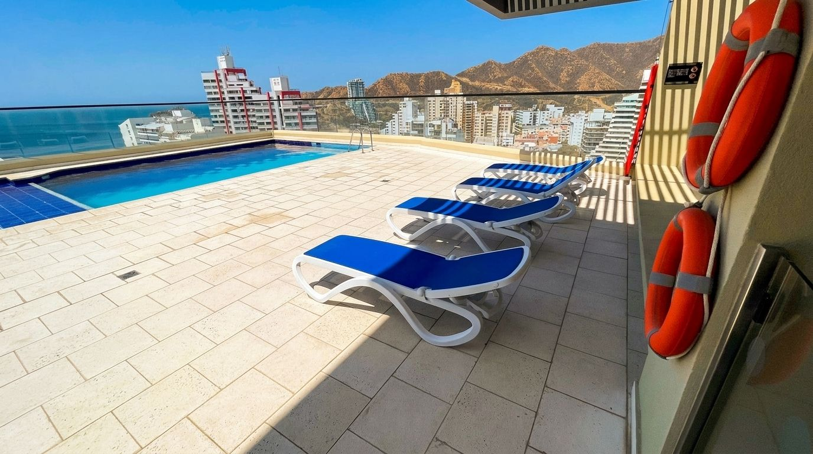
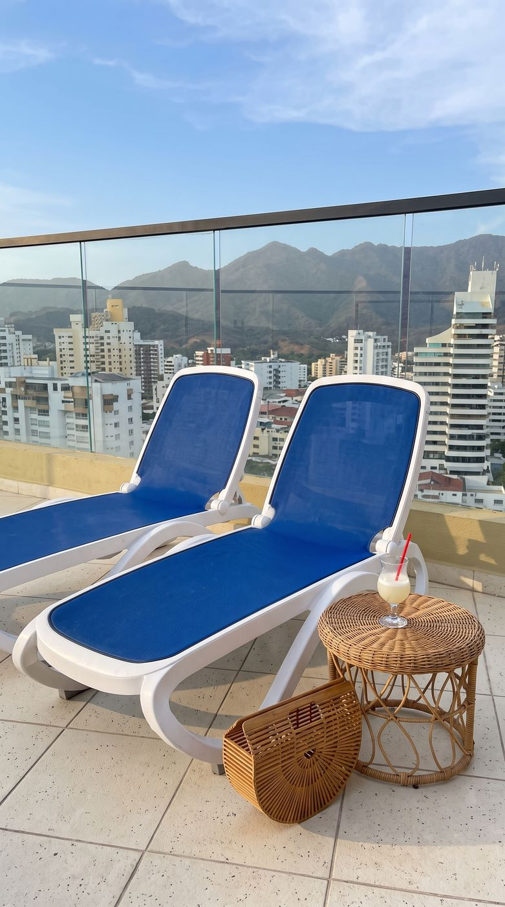

1 double bed, 1 single bed
Air conditioning, a ceiling fan, and large windows toward the beach area, city, and mountains.

Santa Marta, El Rodadero, Beach-View | Sleeps 5
Stay on the 14th floor with Caribbean Sea, Rodadero, and mountain views. This bright 1-bedroom apartment sleeps up to 5 guests with 4 beds and 2 bathrooms with hot water.
The stay
Enjoy air conditioning, high-speed wifi, a Smart TV, hot water, a washing machine, and an equipped kitchen. The rooftop pool, jacuzzi, sauna, and restaurant are on the 15th floor. Rodadero Beach is two blocks away, with restaurants, supermarkets, and shops nearby.

Sleeping
Air conditioning, a ceiling fan, and large windows toward the beach area, city, and mountains.
Two sofa beds and a Smart TV, connected to the kitchen so the space stays open and bright. Best for families or groups comfortable sharing a compact setup.
15
Pool, jacuzzi, sauna, restaurant, and a seating area on the 15th floor. The pool deck looks out over El Rodadero and the Caribbean coast. A building wristband is required.
2
Walk over for a swim, a sunset stroll, or a day by the water. Wash sand off your feet before coming back in, and wear a shirt or cover-up in shared areas.
1
One free parking space is available on the premises. Confirm the designated entry and any building requirements before you arrive.

El Rodadero
It is a busy area, especially on weekends, holidays, and at night. You will see families, visitors, beach vendors, and people out for dinner. That is part of the Rodadero experience.
Taxis are easy to find. From here you can visit Santa Marta’s historic center, Taganga, Minca, Tayrona National Park, Playa Blanca, or the aquarium.
Arrival, in short
About 24 hours before check-in, the building sends a WhatsApp message with a registration link. Every guest completes it separately and receives a QR code.
Show the QR code at the front desk. The building charges 18,000 COP per guest, paid there, no cash. Without registration and a wristband, you cannot enter.
Once wristbands are issued, we send the apartment instructions. The access card is in a secure lockbox at the door. Replacement cost is 250,000 COP.
Book Now
Book a beach-view apartment rental in El Rodadero — Caribbean views, sleeps 5, two blocks from Rodadero Beach. Send your dates and we’ll confirm availability.